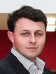

Walid Maalej is a professor of informatics at the university of Hamburg. Previously he has been leading a research group on human and context factors in software engineering at the TU München, where he also received his Ph.D. Walid also received a degree in Technology Management from the CDTM, an institution of the Bavarian Elite Network. Walid's current research interests include recognition of developers' intentions, context-aware recommendation systems for knowledge workers, as well as open innovation. Walid has more than 30 peer-reviewed papers and supervised more than 20 theses on these topics. He chaired the industrial track of RE’10, and co-organized several international events such as the Recommendation Systems for Software Engineering workshop (@ICSE), the Social Software Engineering workshop series (@SE and @ESEC/FSE), the Managing Requirements Knowledge workshop series (@RE), and several Eclipse DemoCamps. Walid served on the PCs of numerous conferences, including ICSE 2013, RE’ 11, RE’12, and ESEC/FSE 2011.
Walid Maalej is a professor of informatics at the university of Hamburg. Previously he has been leading a research group on human and context factors in software engineering at the TU München, where he also received his Ph.D. Walid also received a degree in Technology Management from the CDTM, an institution of the Bavarian Elite Network. Walid's current research interests include recognition of developers' intentions, context-aware recommendation systems for knowledge workers, as well as open innovation. Walid has more than 30 peer-reviewed papers and supervised more than 20 theses on these topics. He chaired the industrial track of RE’10, and co-organized several international events such as the Recommendation Systems for Software Engineering workshop (@ICSE), the Social Software Engineering workshop series (@SE and @ESEC/FSE), the Managing Requirements Knowledge workshop series (@RE), and several Eclipse DemoCamps. Walid served on the PCs of numerous conferences, including ICSE 2013, RE’ 11, RE’12, and ESEC/FSE 2011.
 Andrew Begel is a researcher in the VIBE group at Microsoft Research in Redmond, WA, USA. He received a Bachelor of Science from MIT in 1996, and a Master of Engineering degree, also from MIT, in 1997. In 2005, he earned a Ph.D. in Computer Science from the University of California, Berkeley. At Microsoft, Andrew studies software engineers to understand how their communication, collaboration and coordination behaviors impact effectiveness in collocated and distributed development. He then builds software tools that incentivize problem-mitigating behaviors. Andrew's recent work has focused on the intersection of social computing and software engineering. He co-organized workshops on the topic at ICSE 2011, ICSE 2012, and CSCW 2012, and is currently guest editing a special issue of IEEE Software. He has also organized several workshops on the human aspects of software engineering, most recently the User evaluation for Software Engineering Researchers workshop at ICSE 2012. Andrew currently serves on the steering committee for ICPC, and has served on the PC for many conferences.
Andrew Begel is a researcher in the VIBE group at Microsoft Research in Redmond, WA, USA. He received a Bachelor of Science from MIT in 1996, and a Master of Engineering degree, also from MIT, in 1997. In 2005, he earned a Ph.D. in Computer Science from the University of California, Berkeley. At Microsoft, Andrew studies software engineers to understand how their communication, collaboration and coordination behaviors impact effectiveness in collocated and distributed development. He then builds software tools that incentivize problem-mitigating behaviors. Andrew's recent work has focused on the intersection of social computing and software engineering. He co-organized workshops on the topic at ICSE 2011, ICSE 2012, and CSCW 2012, and is currently guest editing a special issue of IEEE Software. He has also organized several workshops on the human aspects of software engineering, most recently the User evaluation for Software Engineering Researchers workshop at ICSE 2012. Andrew currently serves on the steering committee for ICPC, and has served on the PC for many conferences.
 Brendan Cleary is a research fellow in the Chisel Group at the University of Victoria, Canada. He received his PhD in computer science from the University of Limerick, Ireland in 2007. Brendan has extensive experience in leading large projects, having managed research and commercial projects worth over 2.5 million dollars. He is co-founder of a successful start-up in the learning technology space and has been lead developer and project manager on large government software projects. He is currently working on cyber security research and tools development for Defence Research and Development Canada. His main research interests are in the areas of; research commercialization, reverse engineering, software engineering tools, recommendation systems, software comprehension, and the role of the web in contemporary software development. He has published several articles on these topics in peer reviewed journals, conferences and workshops.
Website; Twitter: @brendancleary1
 Leif Singer is a PhD student in the Software Engineering Group at Leibniz Universität Hannover in Germany, where he also earned his BSc and MSc in computer science.
During the dot-com boom, Leif co-founded a VC-backed mobile Web and applications startup, which has since been sold to an Australian social media company.
He has developed software for the Web since 1997—as a founder, employee, independent consultant, and in open source projects.
In his research, he is interested in the use of social software for software development, the adoption of tools and practices, and empirical software engineering.
Leif Singer is a PhD student in the Software Engineering Group at Leibniz Universität Hannover in Germany, where he also earned his BSc and MSc in computer science.
During the dot-com boom, Leif co-founded a VC-backed mobile Web and applications startup, which has since been sold to an Australian social media company.
He has developed software for the Web since 1997—as a founder, employee, independent consultant, and in open source projects.
In his research, he is interested in the use of social software for software development, the adoption of tools and practices, and empirical software engineering.
 @sse_ws
@sse_ws